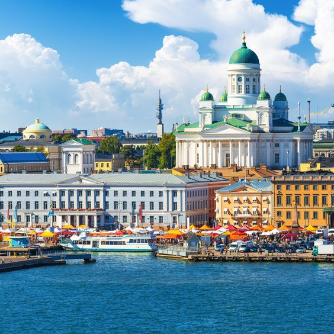

The 3 Best Places To Travel Around The World In 2022: Where To Go Next
Travel is more challenging now than it has been in a long time. Borders tentatively reopen only to slam shut again. A once-simple visa on entry is replaced with piles of paperwork. And the whole world is brushing up on the Greek alphabet whenever a new variant makes headlines. Still, though, amid all the darkness that has defined the pandemic, there are some glimmers of hope. Perhaps the lesson travelers can take into 2022 is that exploring the world is a privilege, not a right. This year's crop of dream places to visit reflect that mindset -- from national parks to remote islands to lesser visited spots, mindfulness and respect for the Earth are part of the journey.
1. LAHTI, FINLAND
Finland is regularly ranked as the happiest place in the world, and there's a great deal to be cheerful about when it comes to the beautiful lakeside city of Lahti. Situated 100 kilometers northeast of Helsinki, this destination is green in every sense. Finland's eighth-largest city is packed with beautiful forests, parks and reserves with incredible hiking trails and lookout points. Lahti has also led the way in terms of environmental innovations, becoming the first Finnish city to be appointed as the European Green Capital after ditching coal as a source of fuel and offering its citizens free transport tickets and food as rewards for being eco-friendly. Those who visit should certainly try out the tap water. The city's innovative groundwater system has been certified by UNESCO as "the world's best drinking water," and is used by award-winning Lahti-based Teerenpeli Brewery & Distillery, the oldest whiskey distillery in Finland.
2. Rome, Italy
The Eternal City is more like a giant, living museum. Visitors are immersed in and surrounded by thousands of years of history. It's a relatively compact city, and a three-day itinerary gets you to the minimum number of must-see places. These must-see sites for any visitor include the Colosseum and adjacent Roman Forum; the Pantheon; and Vatican City, a separate country in the middle of central Rome. Take some time to explore the outskirts of Rome, too. Consider a hike along a tomb-lined section of the Appian Way, the ancient Roman superhighway, and a visit to one of the aqueduct ruins outside the city. If you feel like hitting the beach after all your exploring, Rome has a wonderful assortment of beach towns just a short drive away on the Lazio Coast. Escape the heat, hustle, and bustle of the city to bathe in the cool waters of the Tyrrhenian Sea.
3. Istanbul, Turkey
Turkey's capital city is another destination that offers a great mix of culture, food, and history. There are thousands of years of history here, starting with Ancient Greeks and Ancient Romans and leading up through the Ottoman Empire. There's a mix of the new and the timeless here unlike anywhere else. You can spend the day shopping and the night at a wonderful restaurant eating great Turkish food and dancing to Turkish music, then rise (very early) in the morning to the sound of the Ezan or morning Islamic call to prayer. It echoes across the rooftops as it's broadcast from loudspeakers set atop the minarets of the city's mosques. Istanbul has excellent public transit, which means it's easy to get around and explore all the major sites and monuments. Must-see places include the Blue Mosque, Hagia Sofia, and Topkapi Palace.